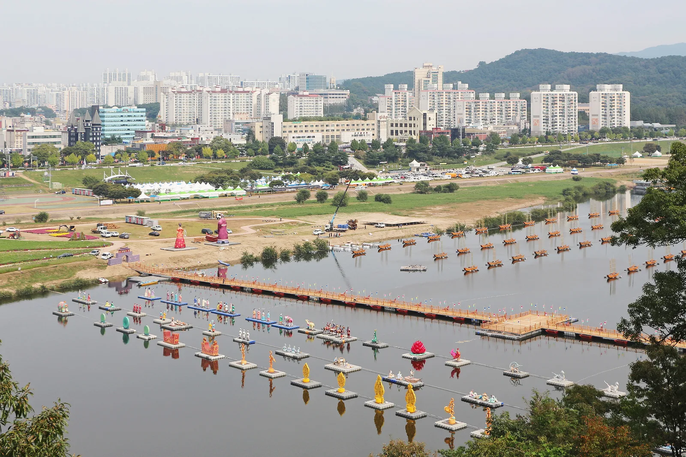
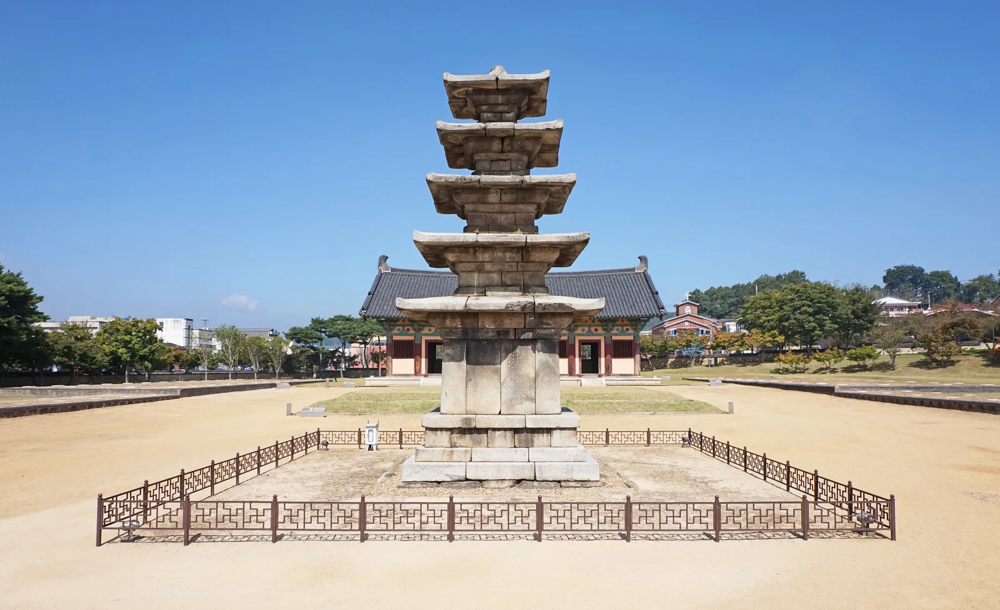
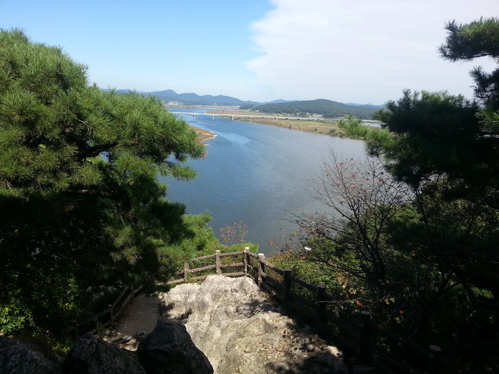
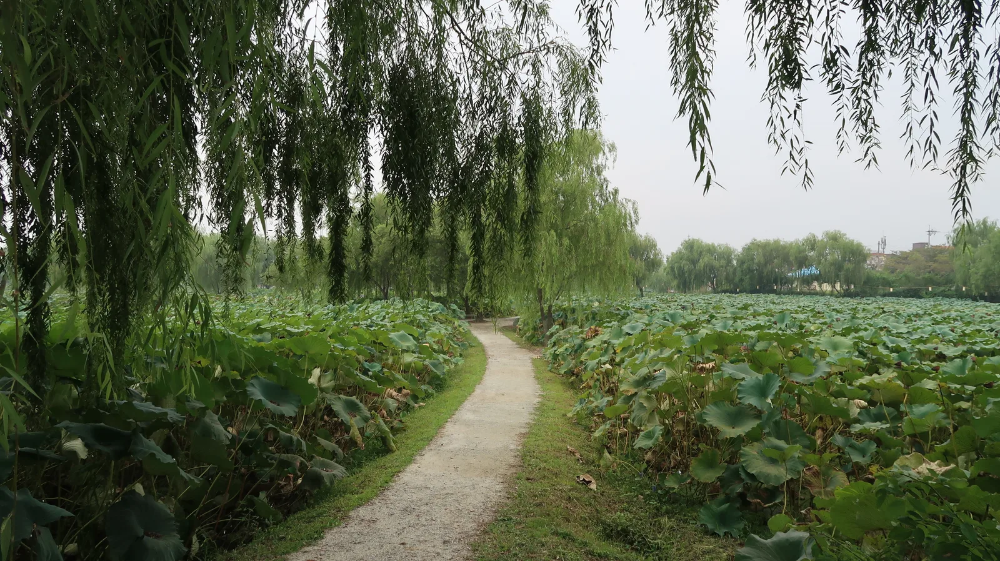
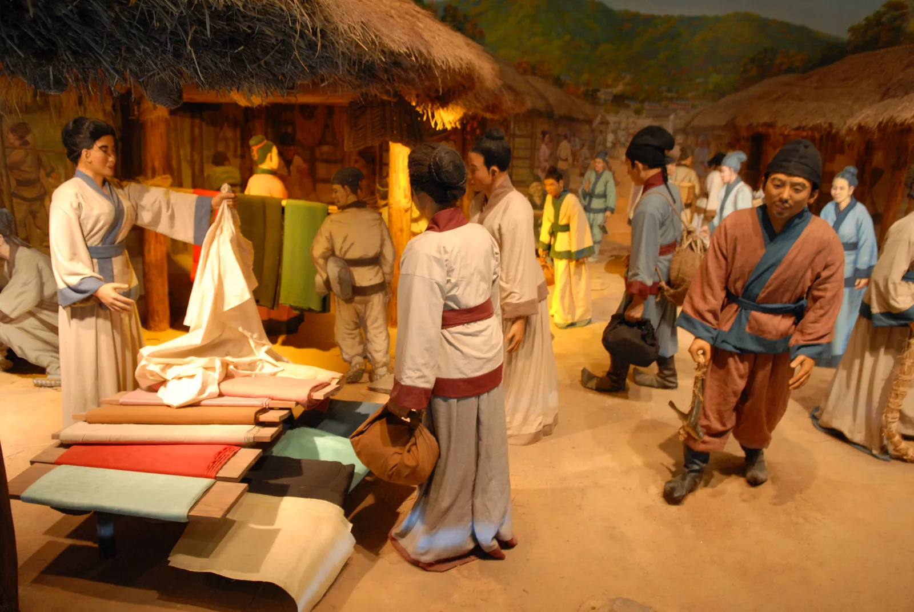
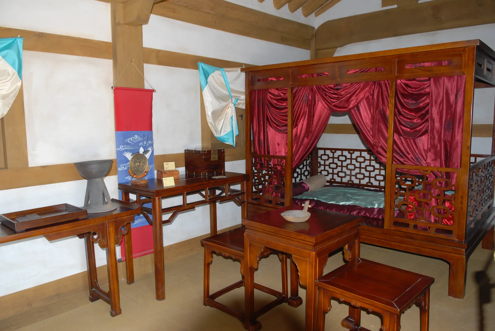

▲ 공주 금강신관공원 축제장. 금강 위로 부교와 유등이 설치되고, 강변 둔치가 임시주차장으로 쓰인다 ⓒ Wikimedia Commons
제72회 백제문화제가 2026년 10월 3일(토)부터 11일(일)까지 9일간 열린다. 공주와 부여, 두 도시에서 동시에 진행되는 축제다. 그런데 올해는 자차로 가는 사람이 반드시 알아야 할 변화가 하나 있다. 부여 쪽 행사장이 기존 백제문화단지에서 부여읍 시가지로 옮겨졌다는 점이다. 넓은 전용 주차장을 갖춘 관광단지에서 도심 한복판으로 무대가 내려온 셈이라, 지난해까지 쓰던 주차 방식이 그대로 통하지 않는다.
1. 올해 달라진 것 — 관광단지에서 도심으로

▲ 부여 정림사지 오층석탑. 올해 부여 행사는 이곳을 비롯한 시가지 유적을 잇는 방식으로 진행된다 ⓒ Bernard Gagnon, Wikimedia Commons
부여군과 백제문화재단은 올해 축제를 정림사지, 관북리유적, 석탑로, 의열로 등 부여읍 시가지의 역사·문화 공간을 유기적으로 연결하는 '도심형 역사문화축제'로 준비하고 있다. 백제문화단지처럼 한 곳에 모여 있던 행사장이 시내 여러 지점으로 흩어지는 구조다.
문제는 주차다. 백제문화재단이 6월 23일부터 28일까지 6일간 진행한 무기명 모바일 설문에는 주민 557명과 소상공인 276명이 참여했는데, 주민의 62.1%가 석탑로 일대의 교통 혼잡과 주차난을 가장 큰 문제로 지목했다. 인프라 부족(44.0%)과 주거환경 불편(37.5%)이 뒤를 이었고, 주민들이 최우선 행정대책으로 꼽은 것도 외곽 임시주차장 확보와 셔틀버스 운행(49.2%)이었다. 소상공인은 도심 개최에 기대감을 보인 반면 일반 주민은 신중한 태도를 보였다는 점이 설문의 골자다. 부여군과 재단은 이를 세부 실행계획에 우선 반영하겠다는 방침이다.
주제가 두 개인 이유 백제문화제는 공주와 부여가 각각 주제를 따로 내건다. 부여는 '아름다운 백제, 빛나는 사비'를 대주제로, '백제의 향연 - 기억을 넘어 미래로'를 부제로 쓰고 있고, 공주는 '청동거울, 1500년 백제의 빛을 비추다'를 내세운다. 검색 결과에 서로 다른 문구가 섞여 나오는 것은 오기가 아니라 두 도시가 각기 다른 슬로건을 쓰기 때문이다.
2. 부여 주차장 — 무료지만 총량이 부족하다

▲ 부소산성에서 내려다본 백마강. 부소산성 관광주차장은 무료지만 승용차 기준 86면 규모다 ⓒ Wikimedia Commons
부여 시가지의 주요 주차장은 대부분 무료다. 다만 개별 규모가 크지 않아, 축제 기간에는 이른 시간이 아니면 자리를 잡기 어렵다.
| 주차장 | 규모 | 요금 |
|---|---|---|
| 부여군청·제2청사 | 승용 412대 | 무료 |
| 부소산성 관광주차장 | 승용 86대 / 대형 21대 | 무료 |
| 정림사지 주차장 | 승용 58대 / 대형 18대 | 무료 |
| 부여공영주차타워(사비로72번길 5-46) | 승용 205대 | 09~18시 유료 / 18~24시 무료 |
표에 있는 무료 주차장을 모두 합쳐도 승용차 기준 550여 면 수준이다. 주차타워 205면을 더해도 760면 안팎이다. 9일간 이어지는 축제의 방문 규모를 생각하면 시가지 안에서 자리를 찾는 전략은 위험하다. 주민들이 요청한 외곽 임시주차장과 셔틀버스가 실제로 어떻게 운영되는지가 올해 부여 방문의 핵심 변수인 이유다.
참고로 부여군은 주차장 조례를 개정해 공영주차장 무료 이용 시간을 기존 30분에서 40분으로 확대했다. 잠깐 내려서 표를 끊거나 일행을 태우는 정도의 정차는 요금 부담이 없어졌지만, 반나절을 세워두는 용도로는 여전히 유료 구간이다.
3. 공주 — 공산성 앞 200면, 오전 10시가 분기점

▲ 공주 공산성. 입구 공영주차장은 무료로 약 200대 규모이며, 성수기에는 오전 10시 이전 도착이 권장된다 ⓒ Wikimedia Commons
공주 쪽은 금강신관공원, 공산성, 왕도심 일원에서 행사가 진행된다. 공산성 입구(금서루 앞) 공영주차장은 무료이며 약 200대 규모인데, 평시에도 주말·성수기에는 오전 10시 이전 도착이 권장되는 곳이다. 축제 기간에는 이보다 더 이른 시간을 잡는 편이 안전하다.
실제로 공주에서 가장 믿을 만한 카드는 신관금강공원 주차장이다. 공주시 공영주차장 현황 기준 263면 규모에 24시간 무료로, 행사장인 금강신관공원과 바로 붙어 있다. 반대로 공산성 건너편 산성시장 주차장은 241면이지만 유료(평일·토요일 08~20시, 30분 500원)라는 점을 알고 가야 한다. 경차와 장애인 차량은 50% 감면된다.
| 주차장 | 규모 | 요금 |
|---|---|---|
| 신관금강공원 주차장 | 263면 | 무료(24시간) |
| 공산성 앞 공영주차장 | 약 200대 | 무료 |
| 산성시장 주차장 | 241면 | 유료(평일·토 08~20시, 30분 500원) |
| 제민천1길 공영주차장 | 50면 | 유료(평일·토 08~19시) |
대표 이미지에서 볼 수 있듯 금강신관공원 쪽은 금강 둔치가 넓게 펼쳐져 있어 임시주차장으로 활용되는 구조다. 다만 부교와 유등 설치 구역, 먹거리 장터가 함께 들어서면서 실제 주차 가능 구역은 해마다 달라진다.
4. 축제 전에 먼저 붐비는 곳 — 9월 정림사지 미디어아트

▲ 부여 궁남지. 정림사지·부소산성과 함께 부여읍 시가지 안에 있어, 축제 기간 주차 수요가 겹치는 지점이다 ⓒ Korearoadtour, Wikimedia Commons (CC BY-SA 4.0)
백제문화제보다 먼저 부여 시가지 주차 사정을 시험하는 행사가 있다. '2026 국가유산 미디어아트 부여 정림사지'가 9월 7일부터 27일까지 매일 저녁 7시~10시 정림사지에서 열린다. 정림사지 오층석탑에 빛과 영상을 입히는 야간 행사여서, 관람객이 몰리는 시간대가 정확히 저녁이다.
자차 관점에서 중요한 건 두 가지다. 첫째, 정림사지 주차장은 승용 58면뿐이라 저녁 시간대에는 금세 찬다. 둘째, 부여공영주차타워가 18시 이후 무료이므로 이 행사 시간대와 정확히 겹친다. 정림사지에서 주차타워까지는 도보권이라, 야간 행사에 갈 때는 처음부터 주차타워를 목적지로 잡는 편이 낫다. 10월 축제 기간의 저녁 방문에도 같은 공식이 적용된다.
5. 두 도시를 하루에 묶는다면

▲ 백제 생활상을 재현한 전시 디오라마(2011년 백제문화제 기간 부여에서 촬영) ⓒ USAG-Humphreys, Wikimedia Commons
공주와 부여는 자동차로 40분 안팎 거리다. 두 곳을 하루에 묶는 것 자체는 무리가 아니지만, 주차 난도를 고려하면 순서가 중요하다. 주차 여유가 상대적으로 나은 공주(금강신관공원 둔치)를 오전에 먼저 보고, 부여 시가지는 오후 늦게나 저녁 시간대에 진입하는 편이 현실적이다. 부여공영주차타워가 18시 이후 무료로 전환되는 것도 저녁 방문에 유리한 조건이다.
6. 아직 확정되지 않은 것들

▲ 백제 시대 실내를 재현한 전시 공간(2011년 백제문화제 기간 부여에서 촬영) ⓒ USAG-Humphreys, Wikimedia Commons
참고 2026년 9월 4일 재확인 기준으로도 백제문화제 공식 홈페이지의 '주차안내'와 '셔틀노선도' 메뉴는 여전히 "현재 준비 중입니다" 상태다. 8월 말 공개된 것은 공식 포스터까지이고, 외곽 임시주차장 위치와 셔틀버스 배차 간격, 시가지 교통통제 구간은 아직 발표되지 않았다. 예년 흐름을 보면 축제 2주 전후로 공지될 가능성이 크다.
따라서 출발 전 공식 홈페이지에서 최종 공지를 확인하는 절차가 필수다. 특히 부여는 행사장이 시가지로 바뀐 첫해인 만큼, 예년 정보를 그대로 적용하면 곤란해질 수 있다.
백제문화제 공식 홈페이지에서 주차·셔틀 공지 확인7. 정리
체크포인트
- 부여 행사장이 백제문화단지 → 부여읍 시가지로 바뀌었다. 예년 주차 동선은 통하지 않는다.
- 부여 시가지 무료 주차장은 다 합쳐도 승용차 550여 면 수준이다. 외곽 임시주차장·셔틀 이용을 전제로 계획하는 편이 안전하다.
- 공주는 신관금강공원 주차장(263면·24시간 무료)이 1순위다. 공산성 앞 주차장은 무료 약 200면이지만 오전 10시 이전 도착이 필요하고, 산성시장 주차장은 유료다.
- 부여공영주차타워(205면)는 18시 이후 무료다. 저녁 방문이라면 선택지가 된다.
- 축제 전인 9월 7~27일 저녁 7~10시에는 정림사지에서 국가유산 미디어아트가 열려, 같은 시가지 주차장을 두고 수요가 먼저 몰린다.
- 셔틀 노선·교통통제는 아직 미확정이므로 출발 직전 공식 공지를 반드시 확인해야 한다.
문의는 부여 041-837-2517, 공주 041-840-8401이다.